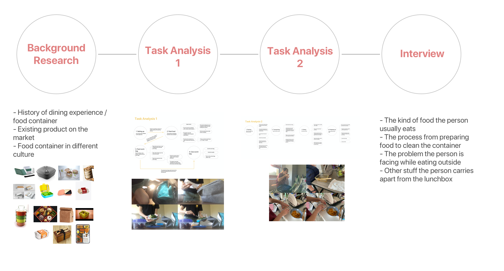
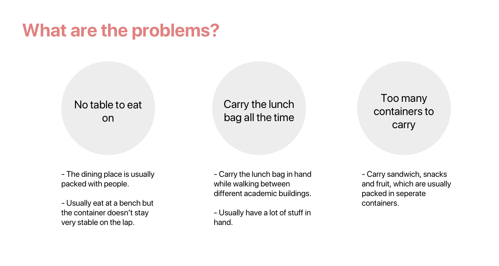

×

On-the-go Dining Experience
Collaborators
None
Time-frame
7 weeks | Sep-Oct 2020
Project overview
Cutting with sharp tools can be especially dangerous for visually impaired people.
Cut & Retract is a safe auto-retractable cutting tool designed for those people, which prevents them being hurt in the three phases of the cutting process: before, during and after cutting.
This product ensures the safety of visually impaired people even with some tiniest daily tasks such as cutting package boxes or paper. On top of that, it shows how design can bring equality to the lives of people with special needs.
01 Research

Persona
02 Define Problems

03 Identify Opportunities
04 Development Process